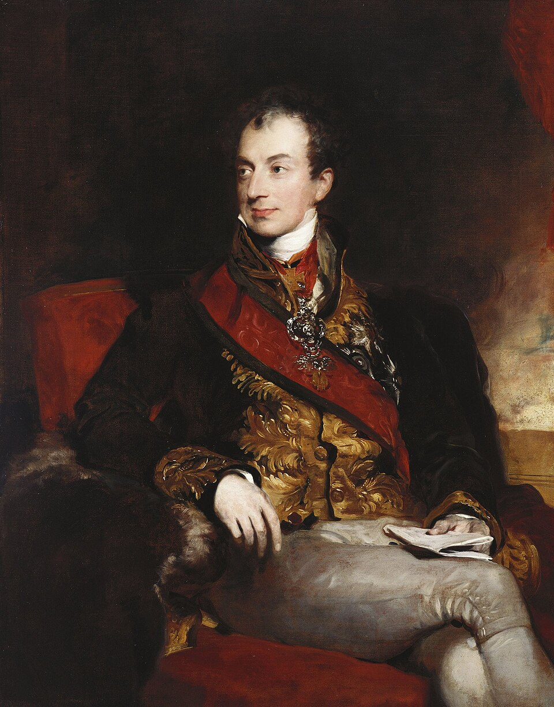
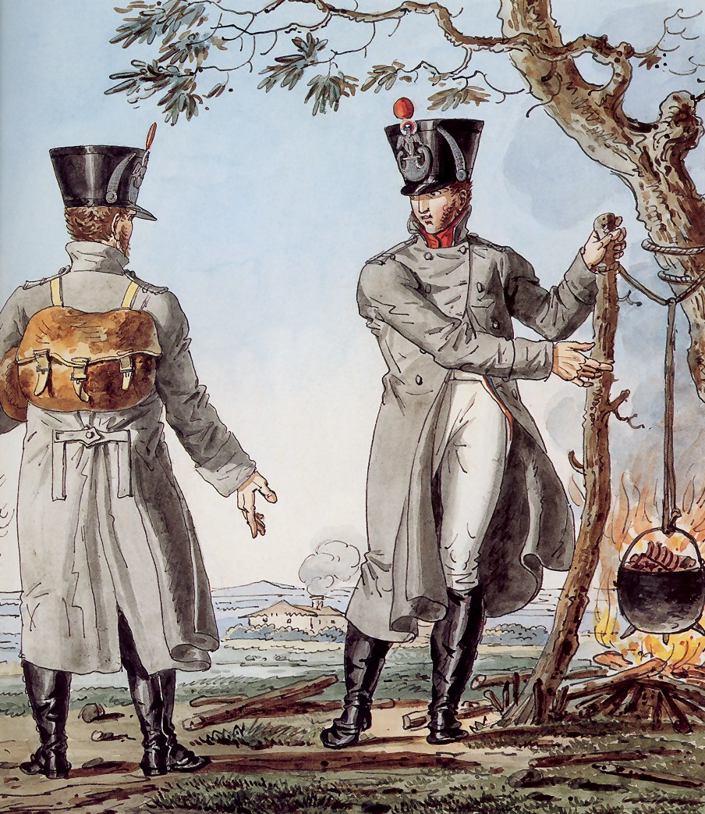
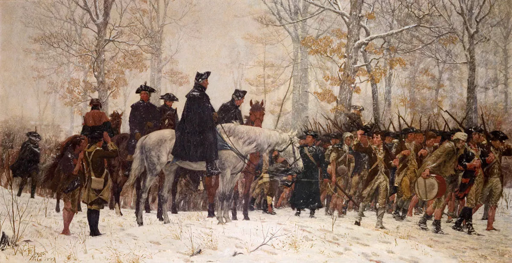
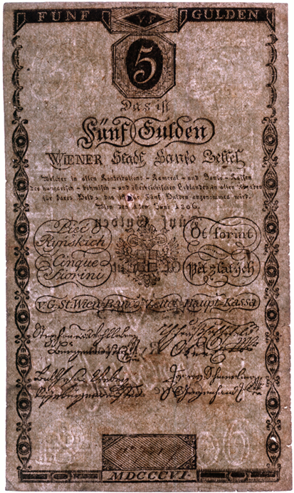
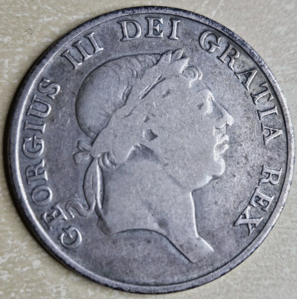
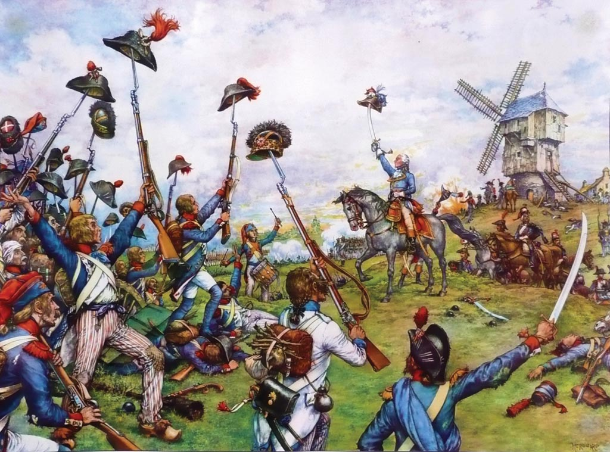

나폴레옹의 겨울 (2) - 균형론자 메테르니히
게시: 2026-06-29T06:30:53+09:00
나폴레옹이 마인츠에서 군대를 재편성하고 파리를 향해 급히 마차를 달리는 동안, 라인강 동쪽의 프랑크푸르트에는 연합군 수뇌부가 속속 입성하고 있었습니다. 그들의 분위기는 승전의 기쁨으로 가득 차 있으면서도, 한편으로는 묘한 긴장감과 불협화음이 흐르고 있었습니다. 여태까지는 나폴레옹이라는 거대한 적에 대한 승리만을 목표로 달려왔고 이제 그것을 이루었으나, 그 다음에는 어떻게 할지에 대해서는 한 번도 제대로 질문을 해본 적도 없고 당연히 답도 없었던 것입니다. 생각해보면 제6차 대불동맹전쟁이 정식으로 시작된 것은 그 해 6월 27일, 라이헨바흐(Reichenhach) 협정이 맺어지면서부터였는데, 그때도 나폴레옹이 라인연방 해체와 독일 및 이탈리아에서의 프랑스군 철수, 바르샤바 공국 해체 등의 조건에 승락하지 않으면 나폴레옹을 패배시킬 때까지 싸운다는 것이었습니다. 이제 라이프치히의 승전으로 인해 위 조건들은 이미 대부분 충족되었거나 곧 충족될 예정이었습니다. 그러니 원하는 것은 모두 이룬 셈이었습니다. 그러니 이제 연합군은 해체하고 집으로 돌아가면 되는 것이었을까요? 당연히 아니었습니다. 무엇보다, 나폴레옹이 순순히 현상황을 받아들이고 두 번 다시 라인강을 넘지 않겠다고 약속을 한 것도 아니었습니다. 또, 이번 전쟁의 주역인 러시아와 프로이센은 여기서 만족할 생각이 없었습니다. 프로이센은 1806년 당한 뼈아픈 패배와 그로 인해 당해야 했던 막대한 배상금 지불 및 영토 상실의 치욕을 나폴레옹에게 갚아주려고 눈이 뒤집힌 상태였고, 러시아의 짜르 알렉산드르도 종교적 신념까지 더해져 내친 김에 파리까지 진격하여 나폴레옹의 압제로부터 유럽을 구해낸 구세주라는 칭송을 받고자 했습니다. 하지만 오스트리아의 생각은 완전히 달랐습니다. 프랑크푸르트에 입성한 연합군 수뇌부 중에는 오스트리아의 외무부 장관인 메테르니히가 있었고, 그의 주도로 이제 뭘 어떻게 할 것인지에 대해 연합군 수뇌부끼리의 논의가 시작되었습니다. 그 회의의 참석자들은 다음과 같았습니다. 오스트리아 : 클레멘스 폰 메테르니히(Klemens von Metternich) 백작 러시아 : 차르 알렉산드르 1세(Alexander I)와 그의 외교 보좌관인 카를 네셀로데(Karl Nesselrode) 백작 프로이센 : 외무장관 하르덴베르크(Karl August von Hardenberg) 백작과 참모장 그나이제나우 영국: 주오스트리아 대사 애버딘(George Hamilton-Gordon, 4th Earl of Aberdeen) 백작

(메테르니히입니다. 1815년 영국 화가 로렌스(Lawrence)가 그린 것으로서, 그때 메테르니히는 알렉산드르 등과 함께 영국을 방문했었습니다. 이 그림으로 보면 잘 모르겠습니다만, 메테르니히는 그만의 매력이 있는 인물이었나 봅니다. 오스트리아에서는 뭐 그렇게까지 대단한 가문 출신이 아니었음에도 외교관으로서 출세를 한 것은 그런 개인적 매력을 잘 살렸기 때문이라는데, 여성 편력도 대단하여 가는 곳마다 스캔달을 일으켰고 그 대상 중에는 쥐노의 와이프 로르 쥐노도 있었고 심지어 뮈라의 와이프이자 나폴레옹의 여동생인 카롤리나도 있었습니다.) 여기서 메테르니히가 내놓은 제안은 한 마디로 1792년 국경선으로 프랑스 영토를 환원시키고, 나폴레옹을 프랑스 황제로 유지시키자는 것이었습니다. 더 구체적으로 말하자면, 프랑스가 예전부터 주장해오던 프랑스의 자연 국경, 즉 라인강과 피레네 산맥, 알프스 산맥을 인정해주자는 것이었습니다. 게다가, 일체의 전쟁 배상금을 요구하지 말자고까지 주장했습니다. 이 제안은 당연히 프로이센을 격분시켰고, 알렉산드르도 매우 불쾌하게 생각했습니다. 메테르니히가 이렇게 나폴레옹편을 들다시피하며 파격적인 프랑스와의 화해안을 내놓은 것은 당연히 오스트리아의 국익을 위한 것이었습니다. 메테르니히는 나쁘게 말하면 수구적 정치인이었고, 좋게 말하면 유럽의 균형 추구자였습니다. 그는 현재 상황에서 나폴레옹의 프랑스가 완전히 몰락해버리면, 러시아가 유럽 제1의 패자가 되어 위세를 부릴 것이며, 어떻게 해서든 그런 일을 막아야 한다고 판단했습니다. 무엇보다 오스트리아와 러시아는 폴란드는 물론 오늘날 루마니아와 몰도바 등 오스만 투르크 영토에서 첨예하게 이권을 다투는 사이었습니다. 게다가 독일어권에서 프로이센의 권위가 더 커지는 것도 막아야 했습니다. 메테르니히의 이런 속셈은 러시아와 프로이센에게도 뻔히 보였습니다. 당연히 이들은 크게 반발했는데, 그럼에도 불구하고 메테르니히가 그렇게 해야만 하는 이유를 줄줄이 열거하자 딱히 반박할 수가 없었습니다. 메테르니히는 현재 연합군의 심각한 보급난과 각국의 파탄 일보직전의 재정상태를 지적했던 것입니다. 실제로 연합군도 나폴레옹보다는 약간 사정이 나았지만, 상황이 안 좋은 것은 마찬가지였습니다. 먼저, 라이프치히 전투가 승전이었다고 해도, 당연히 연합군의 피해도 커서 5만이 훨씬 넘는 사상자를 냈습니다. 말이 쉬워서 5만이지, 불과 10여년 전만 하더라도 오스트리아가 1개 전선에 투입할 수 있는 전체 병력에 해당하는 대군이 한꺼번에 사라진 셈이었습니다. 따라서 연합군의 각 군단과 사단에는 충원되지 못한 빈 자리가 숭숭 뚫려 있는 상태였습니다. 더 나쁜 점은 병력 충원이 더 이상은 어렵다는 점이었습니다. 이미 프로이센은 총동원령을 내려 전체 인구의 6%에 달하는 성인 남성을 전선에 투입한 상황이었습니다. 현재 우리나라 상황으로 따지면 3백만 명이 동원된 셈으로서, 당시 정상적으로 동원할 수 있는 인력 이상을 갈아넣은 상황이었습니다. 원래는 농장과 목장, 공장 등에서 일해야 할 인력들이 군에 와 있었으니 프로이센의 살림살이는 실시간으로 악화되고 있었습니다. 러시아와 오스트리아는 인력 사정이 좀더 나았다고 해도, 사정은 비슷했습니다. 게다가 그렇게 징집해서 데려온 소중한 노동 인력이 실시간으로 죽어가고 있었습니다. 티푸스에게는 국경이 없는지라, 그랑다르메를 갉아먹던 티푸스는 당연히 연합군에게도 타격을 주고 있었기 때문입니다. 각종 보급 상황도 매우 좋지 않았습니다. 프로이센군의 현황에 대해 매우 긍정적으로만 이야기하던 그나이제나우도, 많은 병사들이 군복은 커녕 민간용 셔츠조차 제대로 입지 못해 벌거숭이 상태라고 인정할 정도였습니다. 여태까지는 여름과 초가을이었으므로 그런 상태로도 싸울 수 있었지만, 이제 11월에 접어들면서 외투를 지급받지 못한 병사들은 추위에 떨고 있었습니다. 특히 군화가 큰 문제였습니다. 당시의 조악한 품질의 군화는 보름 정도 진흙길 행군을 하고나면 헤어지고 튿어져 새로운 군화를 지급해야 하는 것이 일반적이었습니다. 그러나 머스켓 소총조차 제대로 주지 못하는 상황에서 군화는 언감생심이었습니다. 많은 병사들이 맨발로 여기까지 걸어왔고, 그런 병사들에게 겨울 전투를 겪게 하는 것은 누가 봐도 무리였습니다.

(1812년 프랑스군의 겨울용 외투, 즉 카뽀뜨(capote)입니다. 영어로는 greatcoat라고 하지요. 나폴레옹도 편지에서 "병사들에게 소총과 카뽀뜨(Capote), 그리고 군인으로서의 기개만 있다면 그것으로 충분하다"라고 할 정도로 외투의 중요성을 강조했습니다. 유럽은 원래 겨울에도 그렇게까지 추운 곳은 아니지만, 원래 인간은 기온보다는 습도에 민감한 동물이라서, 한국은 습기찬 여름이 견디기 어렵고 유럽은 습기찬 겨울이 꽤 혹독한 편입니다.)

(이 그림은 1777년 12월 19일, 조지 워싱턴이 이끄는 독립군이 겨울을 나기 위해 펜실베이니아주의 동계 진영지인 밸리 포지(Valley Forge)로 행군하는 모습입니다. 그림 오른쪽 아래를 보면 병사들 중 일부는 맨발에 헝겊 조각을 묶거나 완전히 맨발인 상태로 눈밭을 걷고 있습니다. 실제로 밸리 포지로 향하는 눈길은 병사들의 발에서 흐른 피로 붉게 물들었다는 기록이 전해집니다. 저때 밸리 포지로 들어간 독립군은 1만2천 정도였는데, 그 중 2천5백 정도가 겨우내 굶주림과 티푸스 등으로 사망했으니, 상황은 1813년 겨울의 나폴레옹과 비슷했습니다. 그런데 결국 워싱턴이 승리했지요. 1813년 나폴레옹도 혹시 또 모르는 일이었습니다.) 하지만 그런 농민 출신 병사들이야 무슨 고생을 하건 말건, 군주들과 귀족들을 가장 우려하게 만든 것은 역시나 돈 문제였습니다. 전쟁은 돈 먹는 하마로서, 이렇게 많은 병사들을 모아서 무장 시키고 먹이고 재우는데는 돈이 끊임없이 들어갔습니다. 후방에서 실어오는 보급품은 물론, 현지에서 조달하는 식량에도 결국은 현지 상인들과 농부들에게 돈을 주고 결제를 해주어야 했습니다. 게다가 아무리 쥐꼬리 만한 액수라고 해도 병사들에게도 급여를 줘야 했는데, 장교들에게조차 급여를 못 주는 상황에서 병사들에게는 당연히 돈을 못 주고 있었습니다. 그렇게 각국 군주들에게는 끊임없이 채무가 쌓이고 있었습니다. 1807년 틸지트 조약에 따라 나폴레옹에게 엄청난 배상금 빚을 지게 된 프로이센은 말할 것도 없고, 바로 작년 온나라가 뒤집어지는 침공을 당해 큰 피해를 입었던 러시아도 재무 상태는 파탄지경이었습니다. 오스트리아는 이미 1811년 국가 파산 선언을 한 상태였습니다. 1809년의 제5차 대불동맹전쟁을 치르느라 방코체텔(Bancozettel)이라고 불리던 지폐를 무분별하게 찍어냈던 것이 결국 부메랑으로 돌아왔던 것입니다. 애초에 그런 상황이던 1813년 여름에 나폴레옹과 전쟁을 한다는 것 자체가 무리였는데, 그래도 전쟁을 감행할 수 있었던 것은 유럽의 돈지갑 영국 덕분이었습니다. 1813년 6월 라이헨바흐 조약에 따라 영국이 러시아와 프로이센에게 각각 133만 파운드와 67만 파운드의 보조금을 지급하기로 했던 것입니다. 휴전 기간 중 오스트리아가 참전한 것도 영국이 오스트리아에게 100만 파운드의 보조금을 약속했기 때문이었습니다. 그러나 영국도 금화나 은화 등의 경화(specie)가 없는 것은 마찬가지였습니다. 영국이 로스차일드 가문의 힘을 빌려 유럽 대륙 전체, 심지어 프랑스에서도 금화와 은화를 사들여 모은 뒤 선박으로 발트해의 항구를 통해 돈을 공급했지만, 그 돈이 프랑크푸르트까지 도착하는데는 수 개월의 시간이 걸렸고, 결정적으로 액수도 턱없이 부족했습니다.

(아우스테를리츠에서의 완패 다음 해인 1806년 발행된 오스트리아 빈 시립은행(Wiener Stadtbanco)의 5굴덴(Gulden)짜리 지폐, 즉 방코체텔(Bancozettel)입니다. 원래 1굴덴의 가치는 순은 약 11.7g에 해당하는 것으로서, 오늘날의 순수한 은 원자재 가치로만 치면 5굴덴은 약 7만 원 선입니다. 1800년대 초반 기준으로 5굴덴이면 숙련된 도시 장인이 일주일 내내 일해야 벌 수 있는 꽤 큰 돈이었습니다. 그러나 1806년 당시엔 이미 대책없는 지폐 발행 남발로 인해, 그 가치는 원래 가치의 30~40% 수준으로 떨어져 있었습니다.)

(1813년 영국에서 발행된 3쉴링짜리 은화입니다. 그런데 뒷면에는 "BANK TOKEN 3 SHILL. 1813"이라고 적혀 있어서, 왜 token이라는 단어를 사용했을까 하는 의문이 듭니다. 당시 영국은 금과 은 등 실물 화폐가 크게 부족하여, 원래 3쉴링 은화에는 15.69g의 은이 포함되어 있어야 하는데 여기에는 13.11g의 은만이 포함되어 있습니다. 그래서 정식 화폐가 아니라 '영국 정부가 3쉴링의 가치를 보증한다'는 뜻으로 token이라는 단어를 쓴 것입니다. 당시 영국군 병사들의 하루 일당이 1쉴링(=12펜스)이었는데, 실제로는 식비와 피복 수리비 등등을 공제했으므로 실제로는 하루에 2펜스 정도 밖에 못 받았습니다. 심지어 군복을 지급받지 못하고 하루 종일 배식을 받지 못해 굶었다고 해도 가차없이 공제는 이루어졌습니다.) 메테르니히는 이런 점을 열거하며, 여기서 나폴레옹을 몰락시키고 배상금을 뜯어내겠다고 전쟁을 벌인다면, 뜯어낼 돈보다 전쟁 비용이 더 많이 들어갈 판국이라는 점을 강조했습니다. 게다가 라인강을 넘어 프랑스 본토로 진격한다고 할 때, 과연 승리는 보장되어 있는가에 대해서도 100% 자신감은 없었습니다. 누가 뭐래도 프랑스는 대국이고, 1792년 자신감 넘치게 프랑스로 쳐들어갔다가 1792년 발미(Valmy)에서 민병대나 다름 없는 조악한 수준의 프랑스군에게 밀려났던 일은 모두의 기억에 또렷이 남아 있었습니다. 프랑스인들이 아무리 전쟁에 지쳤다고 해도, 본토가 외국군에게 침공받을 때 프랑스 민중이 어떤 저력을 발휘할지는 아무도 예측할 수가 없었습니다.

(발미 전투 때, 프로이센과 오스트리아 연합군은 승리를 의심하지 않았습니다. 이쪽이 잘 훈련된 직업군인인 것에 비해, 프랑스군은 그야말로 급조된 오합지졸에 불과했기 때문이었습니다. 그러나 뜻밖에도 조국을 수호한다는 프랑스 민중의 단결된 힘은 대포알도 이겨내고 꿋꿋히 버텨, 당시 연합군 측에서 이 전투를 참관했던 괴테로 하여금 '오늘 여기서 새로운 시대가 열렸다'라고 찬탄하게 만들었습니다.) 뭐니뭐니해도, 오스트리아는 연합군 3대축 중 하나였습니다. 여기서 메테르니히의 제안을 거부하고, 그래서 오스트리아가 혹시라도 연합군에서 떨어져 나가기라도 한다면 그야말로 나폴레옹 토벌은 물 건너 가는 것이었습니다. 게다가, 1813년 여름 라이헨바흐에서 오스트리아가 참전을 선언하면서 오스트리아는 총사령관직을 슈바르첸베르크가 맡는 조건을 내걸었습니다. 오스트리아가 연합군에서 이탈하지는 않는다고 해도, 빈정 상한 오스트리아는 얼마든지 슈바르첸베르크의 태업을 통해 연합군의 진격을 훼방 놓는 것이 너무나 쉬웠습니다. 하지만 러시아와 프로이센으로 하여금 오스트리아의 제안을 받아들이게 만든 진짜 이유는 따로 있었습니다. 그건 과연 무엇이었을까요? Source : The Life of Napoleon Bonaparte, by William Milligan Sloane Napoleon and the Struggle for Germany, by Leggiere, Michael V With Napoleon's Guns by Colonel Jean-Nicolas-Auguste Noël https://grokipedia.com/page/Frankfurt_proposals https://commons.wikimedia.org/wiki/File:Europe_1783-1792_en.png https://en.wikipedia.org/wiki/Saarland https://www.napoleon.org/en/history-of-the-two-empires/articles/200-years-ago-1814-the-french-campaign-step-by-step/ https://www.nps.gov/articles/000/valley-forge-footwear-3.htm https://en.wikipedia.org/wiki/Klemens_von_Metternich https://en.wikipedia.org/wiki/George_Hamilton-Gordon,_4th_Earl_of_Aberdeen https://de.wikipedia.org/wiki/Bancozettel https://warfarehistorynetwork.com/article/battle-of-valmy-cannon-thunder/ https://www.ebay.com/itm/226970056250?itmmeta=01KW6BETW2JXGZJP65X16CNQ7H
{kind=link}